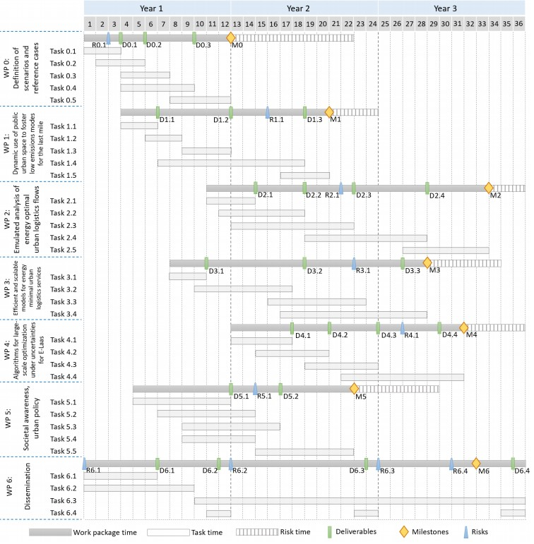

Project Short Title: E-laas
Project Full Title:Energy optimal urban Logistics As A Service
Project Coordinator/Main Applicant Europe: Chalmers University of Technology, Balazs
Kulcsar
Project Coordinator / Main Applicant China:Shanghai University, Lu Zhen
Call topics:
In the E-Laas project, a novel and operational energy-based approach to designing multimodal urban logistics systems is proposed. As such, urban delivery systems are compared by their energy used, including modal shift (micro platforms) and novel ways of combining charging and freight parking. This energy-based quantitative methodology enables us to systematically and naturally define sustainability aims. Thus, our overall aim with E-Laas is to create a novel energy minimizing method from consolidation centers to the customers' doors incentivizing energy savings at each level. Furthermore, the energy-based methodology enables us to contrast different modular solutions via the concept of interlaced energy footprinting.
The aims of the project are:
Figure 1.Schematic of E-Lass
♦ Chalmers University of Technology (CUT, Sweden)
♦ Shanghai University (SU, China)
We focus on teamwork, and all work packages are done by multiple partners. Four universities as the main partners will be more active in the project to undertake the core research work. However, other cooperation partners, including public sectors and companies, will be less work loading responsible for the collaborative work and undertaking the auxiliary work of providing data, pilot implementation, policy support, etc.
The project is composed of 7 work packages combined into a logical workflow.
WP0 is the starting task of the project. It develops detailed assumptions for the implementation of further works. The realization of WPs 1, 2, 3, and 4 is parallel. WP1 is independent of WP3 and WP4, which are closely related according to the implementation methodology. WP2 will be implemented on the base of assumptions from WP0 and will be fed with the results of WPs 1, 3, and 4, influencing the final result. WP2 and WP3 contain simulation studies, but at a different level of detail, it should be emphasized that research in WP2 is of fundamental nature to gain new knowledge, and in WP3, applied research to verify and validate the developed mathematical models and algorithms. WP5 is aimed at consolidating the project results in the assumed impact path and will also consider the effects of analyses from WP2. The WP6 aims to ensure unrestricted and broad access to the project's results, implementation progress, and the distribution of its outcomes among stakeholders.
In Figures 2 and 3, the interconnection of WPs is depicted. In Fig 3, the coupling among the WPs is shown; arrows indicate the information and data coupling between two consecutive WPs. Fig 2 describes the timeline of WPs, including milestones and deliverables. Risk assessment is added too, see dashed WPs. Each and every WP has its respective deliverables and milestones to achieve. In the project E-Laas, we intend to create a new research community, too, meaning that Co-Applicants will be involved in nearly all WPs. This is done intentionally. However, the level of involvement changes from WP to WP.
Figure2. Gantt chart showing the layout of WPs execution in time.
Figure3. Schematic interconnection of the WPs.
Table 1: Work package list
| Work package no. | Work package title | Lead project partner no. | Lead project partner short name | Person-months | Start month | End month |
|---|---|---|---|---|---|---|
| 0 | Definition of scenarios and referencecases | 2, 3 | SU, WUT | 17, 5 | month 1 | month 12 |
| 1 | Dynamic use of public urban space to fosterow emissions modes for the last mile | 1 | CUT | 14,525 | month 4 | month 20 |
| 2 | Emulated analysis of energy optimal urban logistics flows | 2 | WUT | 39,2 | month 11 | month 33 |
| 3 | Efficient and scalable models for energy minimal urban logistics services | 3 | SU | 24 | month 8 | month 28 |
| 4 | Algorithms for large-scale optimization under uncertainties for E-Laas | 4 | TU | 30 | month 13 | month 31 |
| 5 | Societal awareness, urban policy | 1 | CUT | 14,07 | month 5 | month 22 |
| 6 | Dissemination | 4 | TU | 10 | month 1 | month 36 |
| TOTAL | 149,295 | |||||
Table 2: Deliverables list
| Deliverable no. | Deliverable name | WP no. | Delivery date |
|---|---|---|---|
| D0.1 | Updating state of the art based on a review of the scientific literature and analysis of reports and other sources | 0 | month 3 |
| D0.2 | Development of a set of attributes characterizing the scenario and the reference case | 0 | month 5 |
| D0.3 | Identified scenarios of logistics systems, inventory of reference cases with description | 0 | month 9 |
| D1.1 | Analysis of parking data | 1 | month 6 |
| D1.2 | An assessment of the potential location of micro-hubs (not in fixed positions) and charging unloading zones on the curbside will be proposed for at least one zone in one of the cities in Europe and in China | 1 | month 12 |
| D1.3 | A set of models to optimize e-routing that considers charging and unloading space availability, as well as coordinating optimal mobility platform dynamics | 1 | month 18 |
| D2.1 | Assumption for questionary and simulation research | 2 | month 14 |
| D2.2 | Synthetic knowledge of the needs of potential E-Laas users and identified user preferences regarding the services offered | 2 | month 18 |
| D2.3 | Simulation model with indicators of the energy assessment of distribution systems in the relation between the logistics centre and the customer's door for conducting research. Comparative analysis of distribution systems scenarios | 2 | month 28 |
| D3.1 | All pre-processed inputs for modeling | 3 | month 10 |
| D3.2 | Operational planning (verified and adjusted) models for E-Laas logistics services | 3 | month 18 |
| D3.3 | Strategic planning (verified and adjusted) models for E-Laas logistics services | 3 | month 26 |
| D4.1 | Machine learning models for extracting information from data | 4 | month 17 |
| D4.2 | Stochastic optimization models for the E-Laas operations | 4 | month 20 |
| D4.3 | Large-scale optimization algorithms for solving the stochastic optimization models | 4 | month 24 |
| D4.4 | Online tools to support real-time operations | 4 | month 29 |
| D5.1 | Energy efficiency practices guide for logistic entities | 5 | month 12 |
| D5.2 | mpact analysis of the distribution systems proposed in E-Laas on the local community | 5 | month 16 |
| D6.1 | Complete website construction | 6 | month 6 |
| D6.2 | Update the dissemination material and organize workshops | 6 | month 11, 23, 35 |